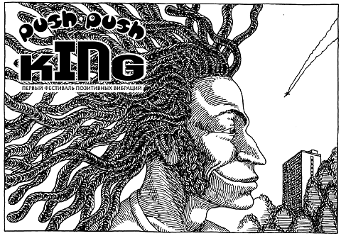

|
Push Push KinG
Первый Фестиваль Позитивных Вибраций

Чип. Комитет охраны тепла поработал на славу. Такое жаркое лето в Москве выпадало лишь дважды,
в 1917 и 1958, если не путаю. Хотя еще был случай с горящими торфяниками, кажется, в 1972, когда по
городу стелился дымок от лесных пожаров. Помните, были такие неплохие крепкие сигареты
"Дымок" без фильтра? Не удивлюсь, если выяснится, что они стали выпускаться именно в те
времена, после этих пожаров. Либо они модными должны были стать тогда. Математик из меня
никудышный, я и аттестат с рук купил, но все-таки кажется, что на дворе последний год - ПГ. Хотя по
телевизору вчера выступал один мужчина, он очень волновался и доказывал, что третье тысячелетие
начнется только в 2001, не раньше, но если он прав и у нас предпоследний год, то это все равно ПГ.
После всех этих слов и цифр почему-то должно показаться логичным и неслучайным, что именно ПГ
взялось организовать Первый Фестиваль Позитивных Вибраций, который и был проведен 19
июня 1999 года в Нескучном саду, в овраге под мостом возле Минералогического музея им. Ферсмана, где,
как говорят знающие люди, лежат несколько метеоритов, которым приезжают поклоняться
шаманы и фанаты со всех концов бывшего СНГ. Коля Грецов, который подготовил все фестивальное
электричество, в том числе собственноручно протянул 200 метров кабеля от щитка из
"Ротонды" (О, "Ротонда"!) до автомата под мостом, так вот Коля Грецов рассказывал, что
лично заходил в музей проверить мистическую силу одного минерала, поднес к камню сомкнутые ладони,
и повеяло на них струею животворящей прохлады. Коля - калач тертый, он еще у Петлюры на
Петровском бульваре умело подключал провода прямо к небу, оперируя терменвоксом вместе с
Лешей Блиновым, который в Лондоне теперь, ему верить можно. В смысле Коле, а не Блинову, хотя и
ему тоже...
Дейл. Да что ты несешь, Чип? Напряги мозги, тупота! Как этот фест замутился?
Чип. О, очень просто. ПГ еще в марте провело в клубе "Край" свою мощную акцию NoDJs. А клуб
"Край" и небезызвестная "Ротонда" ходят под одним брэндом. Тогда получилось интересно, в
то солнечное воскресенье 21 марта (хотя о чем я, какое там, папа, солнечное, дело было все равно
поздно вечером, в подземелье). Ребята приехали готовиться к акции после обеда, часов в
семь-восемь, и обнаружили последствия чего-то вроде конференции сатанистов, которая кончилась
как бы ранним утром, и теперь везде валялись огарки черных свечей, стояла какая-то
подозрительная вода в разного рода сосудах, на стенах нашлась пара наклеек с черепами-костями,
ну и так далее. Короче, все это было вымыто с мылом, а потом сразу стали собираться гости. Вот
тебе и вся подготовка. Ну и пошло-поехало: сначала молодой дизайнер ПГ Алексей Каталкин встал за
двухконфорочную электроплитку и "свел" на глазах у публики два самых настоящих блина,
которые немедленно были вручены художественному реактору ПГ Антону Черняку и общественной
помощнице и активистке ПГ Варваре Авдюшко, у которых около тех чисел были ДР. Третий ДР был у
Дим Дима, композитора группы "Карибасы" из Санкт-Петербурга, но он в момент "сведения
блинов" стоял за своим "Курцвайлем" и был занят.
Дейл. Ты давай покороче, потому что ребятам еще надо про Push Push King рассказать, а наша программа
ограничена временем.
Чип. Идиот! Какая программа? Мы в Интернете, он бесконечен!
Дейл. Компьютерная программа, баклан! Но у ребят, которые нас сейчас смотрят, мозги-то не
бесконечные.
Чип. Вообще я думал, что мозги, они типа круглые. Ну и пот с ним. Дальше про No DJs: сменяя
друг друга, до глубокой ночи играли "Карибасы" и Mono&Исай, последнее - весьма
перспективный проект ди-джея Mono, который похож на Будду, и молодого музыканта Исая, который похож
на хиппи и выступает спиной к зрителям. Даже ди-джеи на No DJs играли вживую! Хм. С ними вместе
стремился развлекать публику Александр Дельфин, пытаясь на ходу переквалифицироваться из
конферансье в шансонье, но было больше похоже на шимпанзе. В зале раздавался смех и наклейки "PG:
No DJs", три вида которых было выпущено специально для акции. Самую смешную - с той самой
электроплиткой - придумал художник Боря Спиридонов (Проект XYZ), две самых тоталитарных -
Алексей Каталкин (эмблемы юноши Каталкина, кстати, попали каким-то полуконтрабандным
образом в каталог фестиваля графического дизайна "Графит", где дизайнера ПГ обозвали
Александром. Ребята из ПГ перестали удивляться такому дилетантскому подходу к подготовке
материала, когда узнали, что среди главных организаторов "Графита" - пресловутый
Александр Балашов. Спокойной ночи, Балашов!).
Дейл. Ты что, тупой? Ты что несешь? Какой еще Балашов?
Чип. Все, все, понял, понял. Короче, в "Краю" в тот вечер было очень хорошо, и в баре
у них тоже, наверное, было все хорошо, потому что в конце концов начальство, властно управлявшее и
"Краем", и центровой "Ротондой",
призвало ПГ на собеседование.
Дейл. Когда это было, весной?
Чип. Знаешь, по-моему, в самом конце мая. Должно быть так, потому что начальство
предложило следующее - провести 6 июня, когда двухсотлетнее ДР будет у самого АСП, какую-нибудь
акцию ПГ. Подумав, решили, что лучше сделать это 12 июня и назвать Push Push King - Фестиваль Ритмической
Поэзии, но потом и это переиграли и в результате Первый Фестиваль Позитивных Вибраций состоялся
19 июня 1999 года именно там, где я уже говорил.
Дейл. Ну, чего замолчал?
Чип. Телка с буферами мимо прошла. Да, так вот. ПГ сказало, что нужно, "Ротонда" обещала:
"Обеспечим". Действительно, почти все с грехом пополам обеспечилось. ООО "Обледенение
Архитекторов" героически подготовило пространство под мостом: накупили
красно-желто-зеленых тканей, развесили электрогирлянды, начертили чертежи сцены и
всякой мебели: лавок, барных модулей и проч., а потом следили за рабочими, которые все это, эх-ма,
колотили-собирали. На фестивале вначале должны были выступить поэты Генрих Сапгир, Лев
Рубинштейн, Тимур Кибиров, а также сетевой и литературный критик Вячеслав Курицын, но, к
сожалению, из-за постоянных переносов с числами и расслабленности отдельных организаторов
литературная часть мероприятия была благополучно задвинута. Впрочем, никто этого и не
заметил, когда все собрались около 19.00 возле кафе перед входом в "Ротонду" - его оборудовал
спонсор фестиваля - а как же без спонсора? Был спонсор и у нас, это одна табачная марка, но
благодаря тому, что в Интернете запрещена реклама табака, я тут не буду говорить, какая.
Дейл. Ты против курения табака?
Чип. Это мое личное дело, но я все-равно не скажу, какая. Желающие смогут это узнать из
других источников. Главное, удалось сделать так, что было кафе, что приехали музыканты, что все
состоялось. Короче, вначале руководители "Ротонды" и сотрудники ПГ провели
пресс-конференцию, в том круглом зале наверху, где раньше хранили сено для лошадей, потому что
здание, поделенное между "Ротондой" и Минералогическим музеем, когда-то было
высокородной конюшней. С этим сеном вылез вдруг представитель музея, который с радостной улыбкой
рассказал, что сено это "сваливали, представляете, вот через эти четыре отверстия по
углам, где сейчас комнатки, сваливали вниз, к лошадям". В общем, после кратковременной
церемонии открылась первая персональная выставка Антона Черняка "За Парки", которую
курировал П.Ширковский. После этого состоялся камерный концерт скрипичной музыки, играл очень
хороший музыкант, но, к сожалению, было душновато, и люди с трудом выносили эту обстановку больше
десяти-пятнадцати минут, но все равно всем понравилось, только скрипач немного обиделся.
Дейл. Ничего себе, немного! Да он, наверное, весь красный ушел!
Чип. Тупак! Это оттого, что душно, я ж говорю, глухарь! Короче, постепенно все собрались под
мостом, и вот началось выступление популярной группы Markscheider Kunst с солистами Сергеем
"Ефром" Ефременко и Селенге "Серафимом" Макангилой. Во время первой песни - "У меня нет
денег", автор слов и концепции команданте Жак, - вместе с группой побесновался Александр Дельфин,
специально выпросивший у одного хорошего товарища привезенную из Египта не то рясу, не то
платье для мужчин, но после этого его выгнали со сцены, и дальше маркшейдера целый час пели одни.
Эта группа достигла очень высокого профессионального уровня, сыгранность
коллектива потрясает, а присутствие африканца добавляет группе уверенности в собственных
корнях. Их песни - смесь народной африканской, латиноамериканской и, конечно же, русской стихии,
яростная атака позитивной эклектикой, в которой находится место и для реггей, и для суккус, и для
сальсы, и для поэзии. В конце триумфального выступления, когда люди уже просто падали в пыль,
барабанщик группы прокричал: "Я хочу поблагодарить Александра Сергеевича Пушкина за
этот фестиваль!" - и он был прав.
Дейл. Что ты мелешь? Пушкин давно уже себе памятник воздвиг нерукотворный! Он и так всем
надоел, теперь еще ты жужжишь. Какой, в жопу, Пушкин?
Чип. Не трогай солнце грязными руками, подонок! А прочитай-ка лучше текст ПГ "Царь-Пушкин",
и помни - в жизни всему приходится учиться, учиться и учиться, как завещал великий Нельсон
Мандела, проведший 27 лет в застенках апартеида, защищая идеалы истинной свободы и демократии,
которые и ты, и я, и ПГ, и все люди доброй воли безоговорочно поддерживают и разделяют, а что
касается позитивных вибраций...
Дейл. Кретин! Нас всех сотрут движеньем мышки! Ты не понимаешь, сейчас читают только ОЧЕНЬ
КОРОТКИЕ ТЕКСТЫ!
Чип. Да, да, все, все. Только по делу. В девять часов начали свое выступление Mono&Исай, и
площадка фестиваля, на которой к тому времени позитивно вибрировало до пятисот человек,
превратилась в громадный чилаут. Сначала опять вылез А.Дельфин, немного попел, но сообразил, что
все равно хуже чем у Высоцкого, и слился, а музыканты с облегчением продолжили делать
настоящее искусство. К сожалению, именно тут поджидал всех собравшихся неприятный сюрприз,
как бы предвосхищенный рассказом про сено человека из музея Ферсмана. Напрашивается
шахматная аналогия, что, мол, ферзь поставил всем шах, но...
Дейл. Опять?!
Чип. Все, все, молчу, молчу. В общем, один разбушевавшийся подвыпивший фэн свалился с
моста. Но тут Чип&Дейл поспешили на помощь: вызвали скорую, сделали так, чтобы рядом с челом
появился японский лекарь. Пострадавшего отправили лечиться, а утонченных эстетов
Mono&Исая сменили медитативные бунтари из революционного даб-оркестра "Карибасы":
колдун Дим Дим, шаман Филя с толстым дрэдлоксом и кудесник Дима Федосеев, без которого, как уже не
раз замечали профессионалы, реггей-движение в России вообще не имело бы шансов. А.Дельфин
постеснялся вылезать на сцену и ушел куда-то в парк, поближе к реке, а в это время "Карибасы"
зажигали публику в быстро сгущающихся овражьих сумерках. Филя спел "Чунга-Чангу",
"Странный сон", ремикс киношной "Электрички", конечно же, блистательную
"Осень". Карибасовский джангл-даб, основанный на roots-reggae-vibrations, но с мощным
электронным фоном, плюс сумасшедший баблинг на клавишах в исполнении Федосеева - это взрыв-пакет
на добрых сорок тонн позитивного тротила. Говорят, что осенью у "Карибасов" выйдет
наконец настоящий, невиртуальный альбом. Браво, браво, публика в нетерпении! В конце концерта
вылез таки А.Дельфин, но даже этот шут не мог испортить праздник. Исполненная совместно с
"Карибасами", Кириллом Маркушиным и Тимуром Мамедовым песня про политику по манере
показалась всем похожей на речь Жириновского. Фестиваль завершился в полной темноте, только
таинственно мерцали электрогирлянды обледеневших архитекторов.
Дейл. А чем все кончилось?
Чип. А ничего и не закончилось, все еще только начинается! Пишите нам по адресу ПГ-Почты,
участвуйте в ПГ-Конкурсах, приходите к нам на ПГ-Фестивали! Оставайтесь с нами на ВВВ.Голос ПГ!
Пока!
Дейл. Он косит под Александра Анатольевича с MTV, а я - под ведущего "Петровки, 38" с
ТВ-Центра. Всего вам доброго!
Чип&Дейл специально для Голоса ПГ.
 P.S. ПГ
благодарит всех, кто помогал организовать и провести Push Push King - Первый Фестиваль Позитивных
Вибраций: P.S. ПГ
благодарит всех, кто помогал организовать и провести Push Push King - Первый Фестиваль Позитивных
Вибраций:
Г.Кострова, О.Цодикова, А.Беркут, П.Ширковского, А.Кузнецова, отдельно Дюшу и весь коллектив
"Ротонды", а также Илью Вознесенского, Алексея Кононенко, Михона Лейкина из ООО
"Обледенение Архитекторов", всю бригаду с аппаратом под руководством Марка и персонально
барышню Машу, отсидевшую за пультом, а также Сергея Карапетяна, без которого ничего бы не
было, торговую марку "Х" за предоставленные призы и остальное, а также Константина
Чернозатонского, Веру Самородову, Ивана Третьякова, Гену Суглобова, Елену Владимировну,
отдельное специальное спасибо замечательным ди-джеям Ивану Полякову и Андрею Чагину, которые
героически прикрывали кафе "Ротонда" в течение всего фестиваля и даже концерт не видели,
а Ваня Поляков еще и иглы для вертушек свои захватил (им иногда помогал Юра Mono, за что ему
также отдельное спасибо), также благодарим московского директора Markscheider Kunst Илью (он в клипе
на заднем плане, танцует во дворе, если ПГ опять ничего не путает). Отдельная история вышла с
боссом ПГ мистером Ильей Фальковским, который во время фестиваля наносил официальные визиты
послам и специальным представителям, а также встречался с пресс-секретарем Президента России.
Ему (Фальковскому, а не Президенту, хотя и Президенту, само собой, уж без него никак нельзя,
а потому и ему... Тьфу. Конец.) ОТДЕЛЬНОЕ, ПЕРСОНАЛЬНОЕ СПАСИБО.
Если кого забыли, найдите А.Дельфина, это он во всем виноват.
P.P.S. И деньги все тоже Дельфин забрал.
Москва, лето ПГ.
Наверх
|